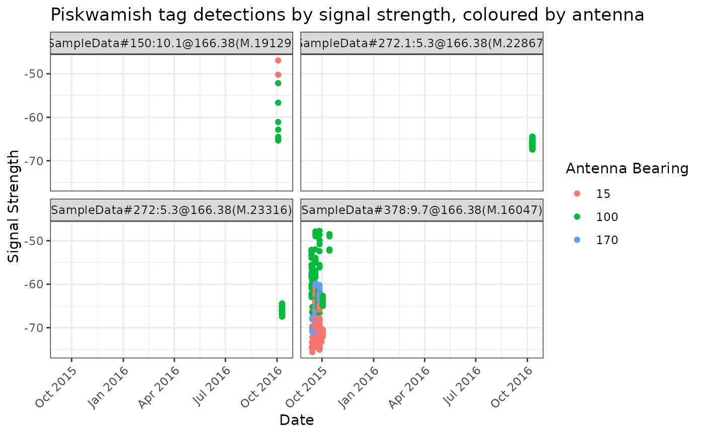
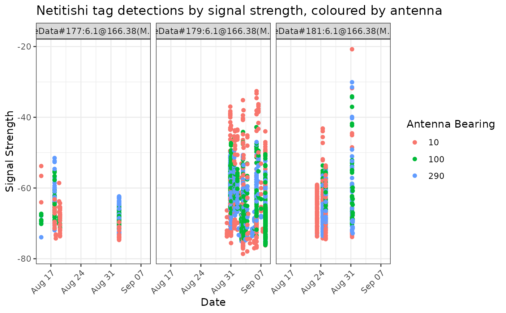

Plot signal strength vs time for all tags detected at a specified site, coloured by antenna
Arguments
- data
a selected table from .motus data, eg. "alltags", or a data.frame of detection data including at a minimum variables for antBearing, ts, recvDeployLat, sig, fullID, recvDeployName
- recvDeployName
name of recvDeployName
Exemples
# You can use either a selected tbl from .motus eg. "alltags", or a
# data.frame, instructions to convert a .motus file to all formats are below.
# download and access data from project 176 in sql format
# usename and password are both "motus.sample"
if (FALSE) sql.motus <- tagme(176, new = TRUE, update = TRUE)
# OR use example sql file included in `motus`
sql.motus <- tagme(176, update = FALSE,
dir = system.file("extdata", package = "motus"))
# convert sql file "sql.motus" to a tbl called "tbl.alltags"
library(dplyr)
tbl.alltags <- tbl(sql.motus, "alltags")
# convert the tbl "tbl.alltags" to a data.frame called "df.alltags"
df.alltags <- tbl.alltags %>%
collect() %>%
as.data.frame()
# Plot all tags for site Piskwamish
plotSiteSig(tbl.alltags, recvDeployName = "Piskwamish")

# Plot select tags for site Piskwamish
plotSiteSig(filter(df.alltags, motusTagID %in% c(16037, 16039, 16035)),
recvDeployName = "Netitishi")
